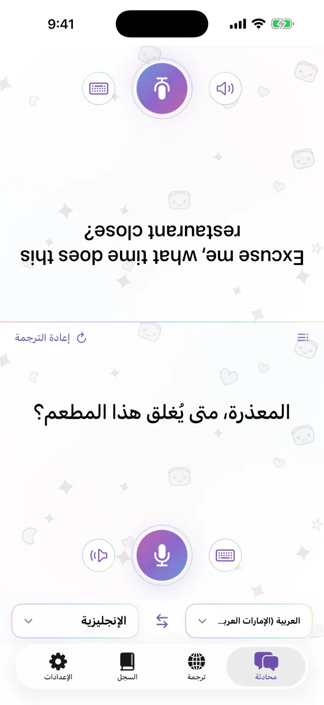
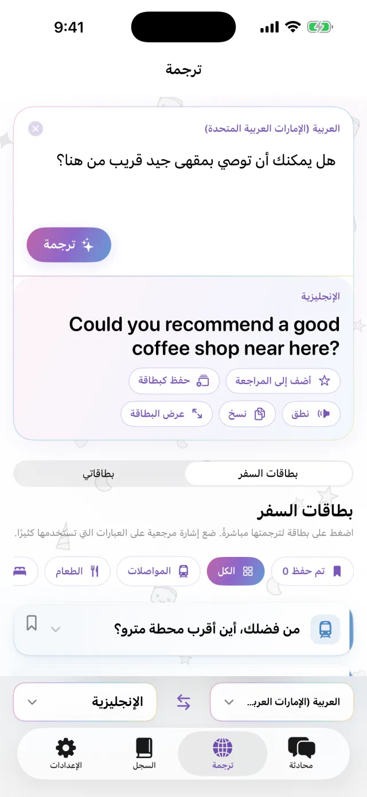
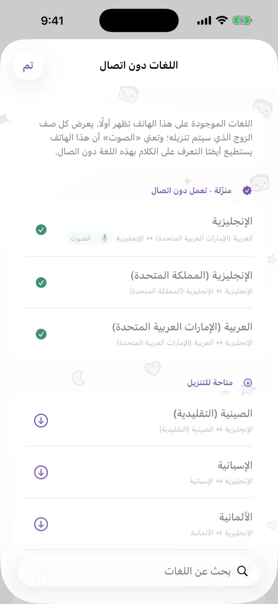
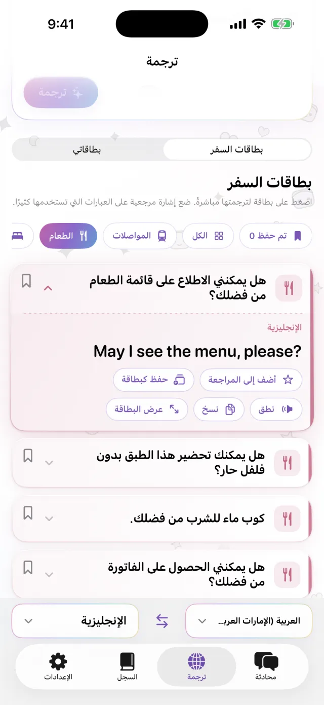
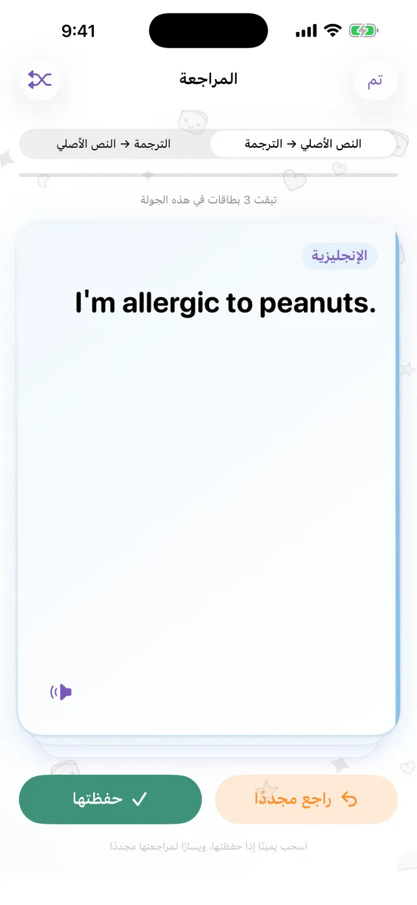

مترجم لجهاز iPhone
مترجم لجهاز iPhone
ضع iPhone بينكما.
هذا كل شيء.
اضغط على الميكروفون وتحدّث. تظهر الترجمة في النصف الآخر من الشاشة، في اتجاه الشخص المقابل. وعندما يرد، يعمل الأمر بالطريقة نفسها. نزّل اللغات أولًا، وستعمل بدون اتصال بالإنترنت.
قريبًا على App Store- حوالي 20 لغة
- بدون اتصال بعد التنزيل
- بدون تسجيل

الكتابة
لا تستطيع التحدث بصوت عالٍ؟ اكتب.
في مكان هادئ، أو عندما يتحدث الطرف الآخر بسرعة كبيرة، اكتب ما تريد. يمكنك تكبير الترجمة لتملأ الشاشة وعرضها عليه.
- انسخ الترجمة أو استمع إليها
- بدّل اللغتين بضغطة واحدة

بدون اتصال
بدون إنترنت، والترجمة تعمل
الترجمة والتعرّف على الكلام والقراءة بصوت عالٍ تتم كلها على iPhone. نزّل اللغات التي تحتاجها قبل الرحلة، وستعمل على متن الطائرة أو قبل شراء شريحة اتصال. لا يُرسل ما تقوله إلى خادم، ولا تُحفظ التسجيلات.

بطاقات العبارات
احفظ ما تقوله في كل مرة
عنوان الفندق، حساسية من طعام، المحطة التي تبحث عنها. احفظها كبطاقات ولن تحتاج إلى كتابتها مرة أخرى. اضغط على بطاقة فتُترجم إلى لغة الشخص الآخر. وتتضمن بطاقات جاهزة للمواصلات والمطاعم والإقامة والتسوق.

Pro
راجع الجمل المحفوظة في موعدها
اضغط على النجمة بجانب جملة لحفظها للمراجعة. إذا تذكرتها، تعود بعد 1 ثم 3 ثم 7 ثم 14 ثم 30 يومًا. وإذا لم تتذكرها، تظهر لك مرة أخرى في اليوم نفسه. يمكنك أن تبدأ من النص الأصلي إلى الترجمة، أو العكس. هذه الميزة ضمن Pro.

مفيد في
- الطلب في مطعم صغير
- إعطاء سائق التاكسي العنوان
- شرح الحساسية في الصيدلية
- ترك الحقائب عند مكتب الاستقبال في الفندق
- السؤال عن الطريق
شاهده في 30 ثانية
وضع الطيران مفعّل في هذا الفيديو.
المعلومات الأساسية
| اللغات | حوالي 20 لغة (اللغات التي توفّر Apple ترجمتها على الجهاز) |
|---|---|
| بدون اتصال | نعم، بعد تنزيل اللغات |
| الإدخال الصوتي | نعم. بعض اللغات تدعم الكتابة فقط |
| الحساب | غير مطلوب |
| السعر | مجاني. Pro بشكل منفصل (انظر أدناه) |
| المتطلبات | iPhone بنظام iOS 18 أو أحدث |
- تحتاج إلى اتصال بالإنترنت في المرة الأولى لتنزيل اللغات.
- تظهر الأسعار بعملتك المحلية في App Store.
المجاني وPro
مجاني
- محادثة وجهًا لوجه
- الكتابة والعرض بملء الشاشة
- الترجمة بدون اتصال
- بطاقات السفر و3 بطاقات خاصة بك
- إعلان صغير على شكل شريط
Pro
- بدون إعلانات
- عدد غير محدود من البطاقات
- سجل الترجمة والمراجعة المتباعدة
أسبوعيًا أو شهريًا أو بدفعة واحدة.
قبل السفر، نزّل اللغات.
قريبًا على App StoreiPhone · iOS 18 أو أحدث · التنزيل مجاني · كيف تعمل كل شاشة